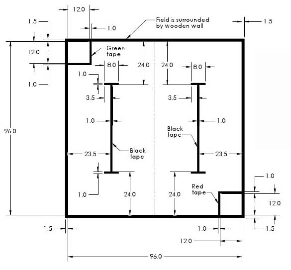
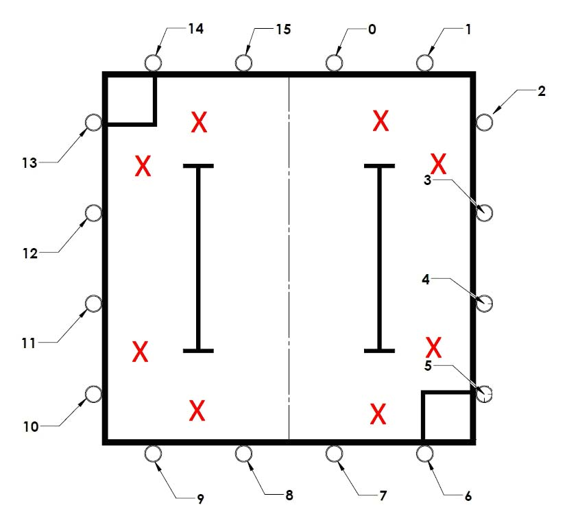
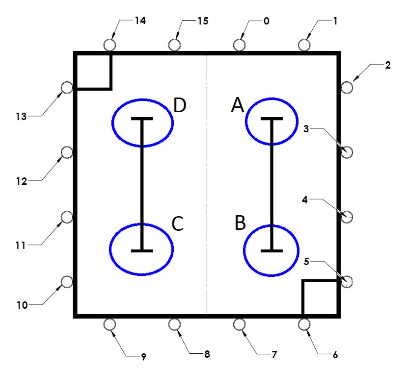
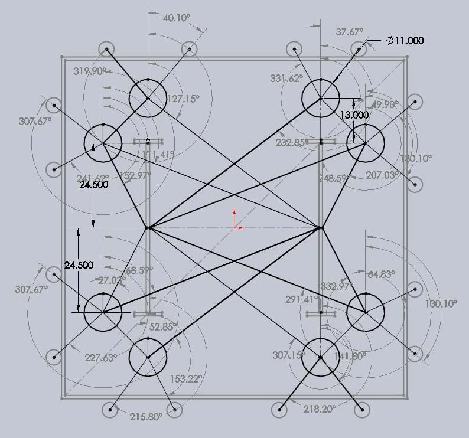

|
||
|
|
||
|
OVERVIEW
| HARDWARE
| SOFTWARE
| GALLERY
| THE TEAM
|
||
|
Overview
Arm Positioning Drive Train |
POSITIONING METHOD
Since our strategy utilized an arm to knock off the hats, our robot needed a reliable path-planning method to navigate the field. On the right is an image of the dimensions of the playing field in inches. |
 |
| We decided that our robot should navigate to one of 8 positions on the board, identified with X's in the image on the right. |  | |
| To simplify our path planning, we broke the board up into 4 distinct neighborhoods (A, B, C & D) - one in each quadrant. Each neighborhood contained 2 x-positions from which 4 targets could be reached. Each neighborhood had a central point, identified with circles. |  | |
From there, we developed the maneuvers needed to reach each of the 8 x-positions. Moving between these positions and the home based required a combination of only 5 basic maneuvers:
We set up multi-dimensional arrays that specified paths from each position to the other 3 neighborhoods. We also pre-programmed the paths from the central point of each neighborhood to the 2 x-positions in that neighborhood. We also encoded the orientation the robot needed to face to attack the target. With these data structures in place, it was straightforward to develop a series of maneuvers to move our robot between any two positions on the board. The image on the right illustrates the paths and orientations our robot would require to reach any of the 8 x-positions. Our approach to path-planning has many advantages. First, we only have 5 basic maneuvers to code up and debug (most of which are only 4 or 5 steps long). Once these basic maneuvers were working, we could debug our path-planning code at our workstation without the need for repeated testing on the game board (which was in high demand at reasonable times of the day) because if our robot was planning on executing the right series of maneuvers, we knew he'd successfully get to the correct location. Second, this approach is relatively simple and works for either the half court or full court game scenarios. Third, the amount of memory used for the data structures is relatively small (less than 500 bytes). Lastely, going back to the neighborhood points frequently means our robot repeatedly re-establishes his position on the board using the black tape. This makes it unlikely for him to get lost. |
||
{kind=link}